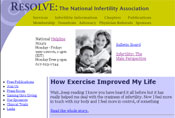
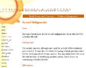

Post Treatment Resources: Possible Late Effects of Cancer Treatment
Below you will find links to resources that may assist you in your dialogue with your physician about your follow-up care.
On this Page:
The Leukemia and Lymphoma Society
This site provides a fact sheet on post-treatment fatigue experienced by survivors treated for blood-related cancers along with methods for controlling this symptom.
National
Cancer Institute/Fatigue
Information
about post-treatment cancer-related fatigue is addressed.
myoncofertility.org
This site is a patient education resource provided by the Oncofertility Consortium.
Fertile Hope
This site provides information for cancer patients faced with infertility.
National Infertility Association
This site provides resources related to the physical, emotional, and legal or administrative aspects of infertility.
National
Cancer Institute (NCI)
This NCI site addresses information about lymphedema management.
National Lymphedema Network (NLN)
The NLN, a non-profit organization, provides education and guidance to lymphedema patients and health care professionals. Information on the prevention and management of primary and secondary lymphedema is provided on this site.
Breast Cancer Resource Directory of North Carolina
Information on coping with post-treatment issues such as hormone replacement therapy, lymphedema, and menopause is provided.
Johns Hopkins Comprehensive Cancer Center/The Breast Center
Information for patients completing breast cancer treatment is provided
The Leukemia and Lymphoma Society
This Fact Sheet describes some of the long-term and late risks associated with treatment with chemotherapy and radiation experienced by adult and pediatric survivors treated for blood-related cancers (such as leukemias, lymphomas and myeloma.)
M.D. Anderson Comprehensive Cancer Center
This site provides information on potential complications to specific organs in the body from cancer treatment.
SusanLoveMD.com
This site provides information about common problems women experience after cancer treatment.
The Leukemia and Lymphoma Society
This Fact Sheet describes some of the long-term and late risks associated with treatment with chemotherapy and radiation experienced by adult and pediatric survivors treated for blood-related cancers (such as leukemias, lymphomas and myeloma.)
M.D. Anderson Comprehensive Cancer Center
This site provides information on the treatment and detection of late effects in pediatric survivors.
National Wilms Tumor Study Group (NWTSG)
This site provides results of a federally funded, multi-institutional study of the treatment of patients with Wilm’s tumor. Answers to frequently asked questions about follow-up care and late effects of treatment learning disabilities, behavior problems and fertility issues are provided.
Outlook: Life Beyond Childhood Cancer
This site supported by the University of Wisconsin Cancer Comprehensive Cancer Center provides information about risk factors for second malignancies.
Late Effects of Childhood Cancer Therapies
This site provides information on treatment and late effects of pediatric cancer.
American Cancer Society (ACS)
For Men
For Women
The ACS has developed two documents that address sexual problems for men and women that may occur as a result of cancer and its treatment.
National Cancer Institute (NCI)/Sexuality
This NCI Web site provides information about the factors that affect
sexuality during and after cancer treatment and treatments for these
problems.